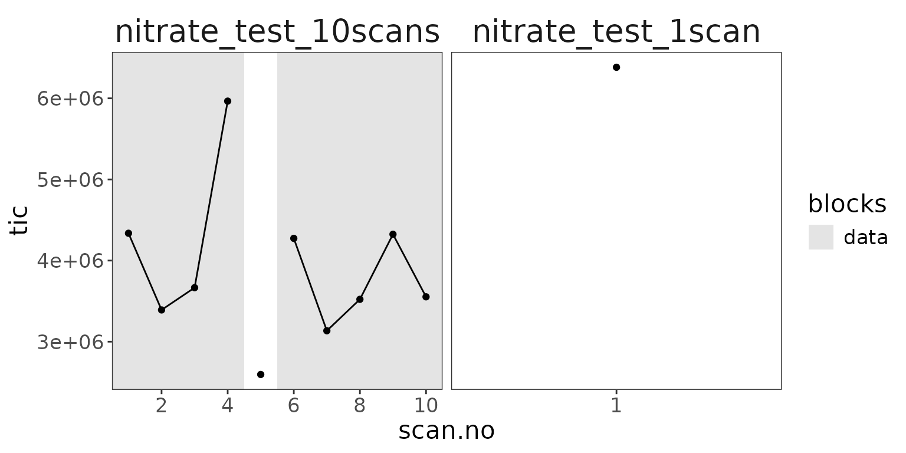
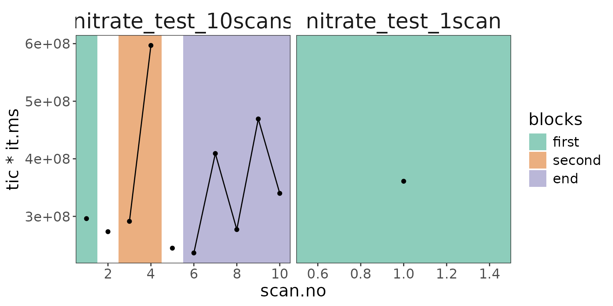
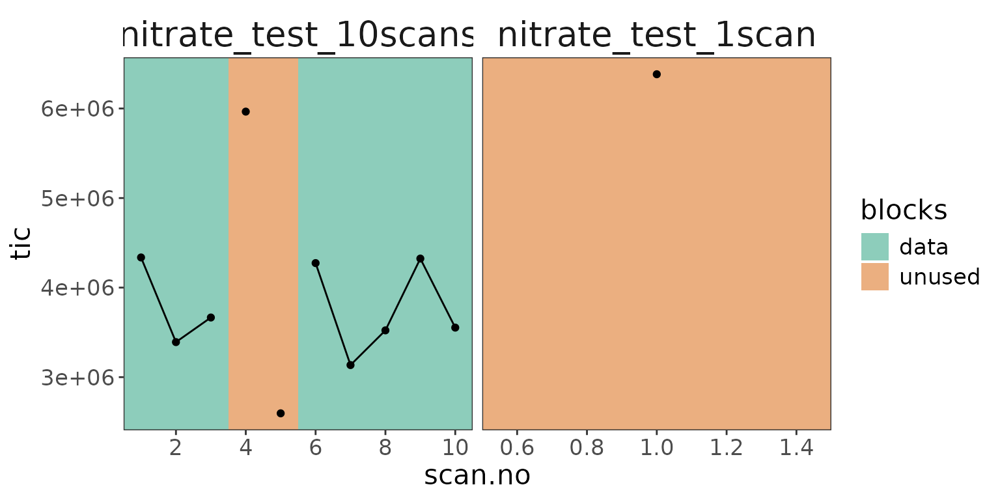
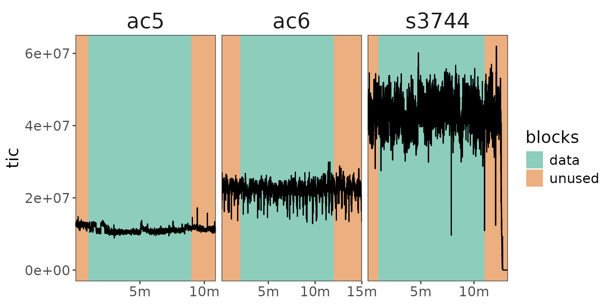
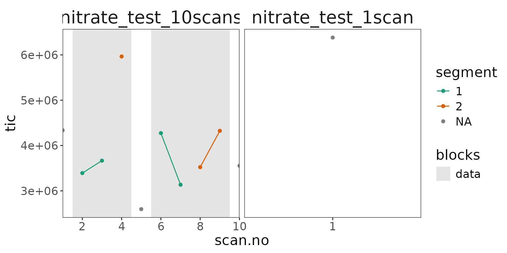

Data blocks mark which scans belong together (e.g. one sample in a flow injection, or the alternating reference and sample measurements in a dual inlet analysis) and which scans are not used for the ratio calculations. This vignette shows how to define, inspect, adjust, and segment data blocks.
Example data
Here we use the two small nitrate test files that come with the package (a file with 10 scans and a file with a single scan).
# read, aggregate, and identify the isotopocules
data <-
system.file(package = "isoorbi", "extdata") |>
orbi_find_raw(pattern = "nitrate") |>
orbi_read_raw() |>
orbi_aggregate_raw() |>
orbi_identify_isotopocules(
tibble(
compound = "nitrate",
isotopolog = c("M0", "15N", "17O", "18O"),
mass = c(61.9878, 62.9850, 62.9922, 63.9922),
tolerance = 1,
charge = 1
)
)Defining blocks
orbi_define_blocks()
Each block is defined either by time (start_time.min and
end_time.min) or by scan number (start_scan.no
and end_scan.no). By default, a block is added to every
file. Note that to let a block stretch until the last data point, use
Inf for end_time.min or
end_scan.no. Use orbi_get_blocks_info() to get
a table of the defined blocks.
# one block for all files (by time)
data |>
orbi_define_blocks(start_time.min = 0, end_time.min = 0.015) |>
orbi_get_blocks_info() → block: covers scans 1 to 5 (239ms to 804ms) in 2 files# A tibble: 3 × 11
uidx filename data_group block block_name data_type segment start_scan.no
<int> <chr> <int> <int> <chr> <chr> <int> <int>
1 1 nitrate_tes… 1 1 NA data NA 1
2 1 nitrate_tes… 2 0 NA unused NA 6
3 2 nitrate_tes… 1 1 NA data NA 1
# ℹ 3 more variables: end_scan.no <int>, start_time.min <dbl>,
# end_time.min <dbl>
To add a block only to specific file(s), use
in_filename. Like all the other parameters, it can be a
single value or a vector with one value per block. Use
orbi_plot_raw_data() to visualize where blocks have been
defined.
data |>
orbi_define_blocks(
start_scan.no = c(1, 6),
end_scan.no = c(4, Inf),
block_name = c("start", "finish"),
in_filename = "nitrate_test_10scans"
) |>
# plot with scans instead of time as x axis and show all data points for clarity
orbi_plot_raw_data(y = tic, x = "scan.no", show_points = TRUE)
The two data blocks defined in the 10 scan test file only.
Blocks table
For defining many blocks in a file, it is often easier to provide
them as a blocks_table (which could also come from a
spreadsheet) with one row per block. An in_filename of
NA adds that block to all files.
blocks_table <- tibble(
start_scan.no = c(1, 3, 6),
end_scan.no = c(1, 4, Inf),
block_name = c("first", "second", "end"),
in_filename = c(NA, "nitrate_test_10scans", "nitrate_test_10scans")
)
blocks_table# A tibble: 3 × 4
start_scan.no end_scan.no block_name in_filename
<dbl> <dbl> <chr> <chr>
1 1 1 first NA
2 3 4 second nitrate_test_10scans
3 6 Inf end nitrate_test_10scans
data |>
orbi_define_blocks(blocks_table = blocks_table) |>
orbi_plot_raw_data(
y = tic * it.ms,
x = "scan.no",
show_points = TRUE,
# to show the names of the data blocks, turn this setting on
use_data_block_names = TRUE
)
Data blocks defined from a blocks table and shown with the block names.
Dual inlet blocks
For dual inlet analyses with regularly alternating reference and
sample blocks, orbi_define_blocks_for_dual_inlet() defines
all the blocks at once from the block and changeover durations. See the
dual inlet vignette for an example.
Adjusting blocks
orbi_adjust_blocks()
Once blocks are defined, their start and end can be adjusted with
orbi_adjust_blocks(), either by shifting them
(shift_start_time.min, shift_end_time.min,
shift_start_scan.no, shift_end_scan.no) or by
setting them (set_start_time.min,
set_end_time.min, set_start_scan.no,
set_end_scan.no). The block number identifies
which block to adjust. Note that blocks are numbered within each file,
so without an in_filename, the block is adjusted in all
files that have it.
# two blocks in the 10 scan file
blocks_data <- data |>
orbi_define_blocks(
start_scan.no = c(1, 6),
end_scan.no = c(4, Inf),
block_name = c("start", "finish"),
in_filename = "nitrate_test_10scans"
)
# shorten the first block by one scan at its end
blocks_data |>
orbi_adjust_blocks(
block = 1,
in_filename = "nitrate_test_10scans",
shift_end_scan.no = -1
) |>
orbi_plot_raw_data(
y = tic,
x = "scan.no",
show_points = TRUE,
# show all blocks, not just the data blocks
add_all_blocks = TRUE
)
The first block shortened by one scan at its end.
Several adjustments can simply be made one after the other, which is often the most readable way.
blocks_data |>
# the first block starts one scan later
orbi_adjust_blocks(
block = 1,
in_filename = "nitrate_test_10scans",
set_start_scan.no = 2
) |>
# the second block ends one scan earlier
orbi_adjust_blocks(
block = 2,
in_filename = "nitrate_test_10scans",
shift_end_scan.no = -1
) |>
orbi_plot_raw_data(
y = tic,
x = "scan.no",
show_points = TRUE,
add_all_blocks = TRUE
)
The first block starts one scan later and the second block ends one scan earlier.
Alternatively, like with orbi_define_blocks(), all
parameters can be vectors (one value per adjustment) or provided as a
blocks_table with a block column. This makes
the same adjustments as above in a single call. Scans that are no longer
part of a block are marked as unused.
adjusted_data <- blocks_data |>
orbi_adjust_blocks(
blocks_table = tibble(
block = c(1, 2),
in_filename = "nitrate_test_10scans",
set_start_scan.no = c(2, NA),
shift_end_scan.no = c(NA, -1)
)
)
adjusted_data |>
orbi_plot_raw_data(
y = tic,
x = "scan.no",
show_points = TRUE,
# show all blocks, not just the data blocks
add_all_blocks = TRUE
)The two data blocks after adjusting them (the scans that are no longer part of a block are unused).
Default block with file-specific adjustments
A common approach with many files is to first define a default block
for all files with orbi_define_blocks() and then adjust it
for the individual files with a blocks_table (which could
also come from a spreadsheet that keeps track of the analyses). Here we
use three flow injection example files (see also the flow injection vignette): by default, the
data block starts after 1 minute and lasts until the end of each file.
Then the block is shortened in each file, for example to exclude the
spray current dropping out at the end of the s3744
analysis.
# three flow injection example files
flow_data <-
orbi_get_example_files(c("ac5.RAW", "ac6.RAW", "s3744.RAW")) |>
orbi_read_raw() |>
orbi_aggregate_raw()
# file-specific adjustments of the default block
adjustments <- tibble(
block = 1,
in_filename = c("ac5", "ac6", "s3744"),
set_start_time.min = c(NA, 2, NA),
set_end_time.min = c(9, 12, 11)
)
adjustments# A tibble: 3 × 4
block in_filename set_start_time.min set_end_time.min
<dbl> <chr> <dbl> <dbl>
1 1 ac5 NA 9
2 1 ac6 2 12
3 1 s3744 NA 11
# default block for all files, then adjusted for each file
flow_blocks <- flow_data |>
orbi_define_blocks(
start_time.min = 1,
end_time.min = Inf,
block_name = "sample"
) |>
orbi_adjust_blocks(blocks_table = adjustments)
flow_blocks |>
orbi_plot_raw_data(
y = tic,
add_all_blocks = TRUE,
# compact time axis labels for the narrow panels
n_x_breaks = 3,
short_time_labels = TRUE
)
A default block defined for all files and then adjusted for each file with a blocks table.
Segmenting blocks
orbi_segment_blocks()
Optionally, the data blocks can be divided into segments, e.g. to
explore how the data changes within a block. The segments can be defined
by number (into_segments), by the number of scans in each
segment (by_scans), or by a time interval
(by_time_interval). Since adjusting blocks removes all
segmentation, make sure to segment the blocks after
finishing all block definitions and adjustments.
adjusted_data |>
orbi_segment_blocks(by_scans = 2) |>
orbi_plot_raw_data(
y = tic,
x = "scan.no",
show_points = TRUE,
# color the data points by segment
color = factor(segment)
) +
ggplot2::labs(color = "segment")
The data blocks divided into segments of 2 scans each (data points colored by segment).